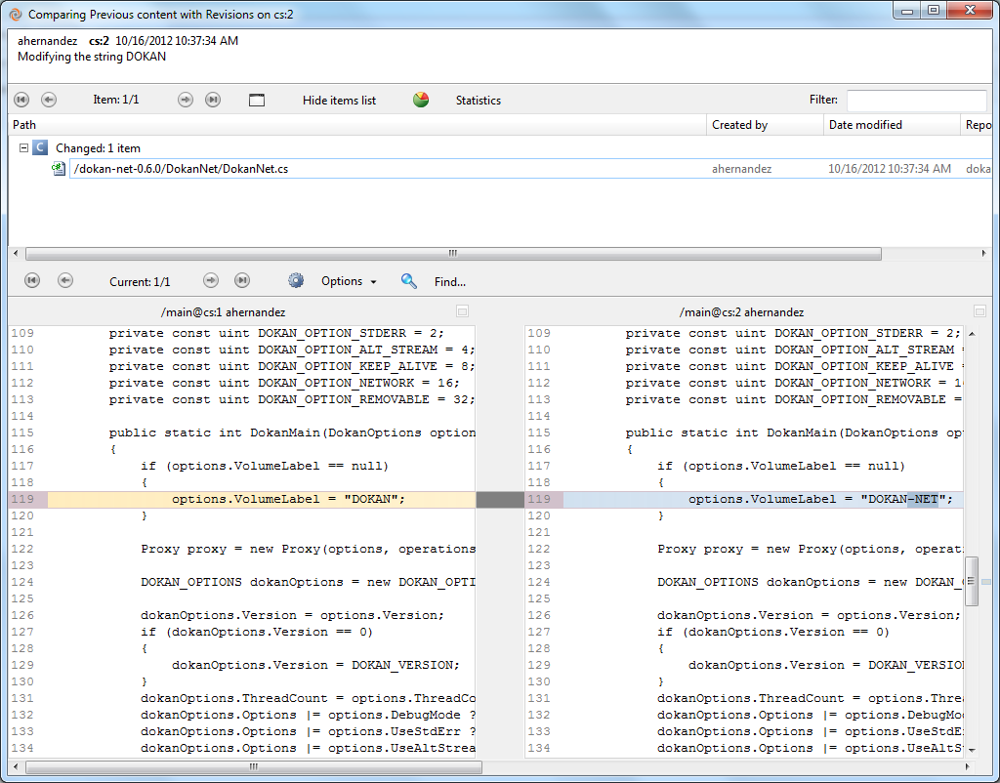

Let’s go to the branch explorer to see the current state of the repository. Something like the following will show up:
Figure 1: Plastic SCM Repository
In the branch, there are “three changeset”:
Right click on the current changeset, and click on the “Diff changeset” action as the figure below shows:
Figure 2: Diff Changeset
Once the button is clicked you will see how comparing previous content with current content. The windows will look like this:

Figure 3: Diff View
There are three parts:
Figure 4: Top of Diff View
Figure 5: Middle of Diff View
Figure 6: Bottom of Diff View
Great!! You are finished the second lab.